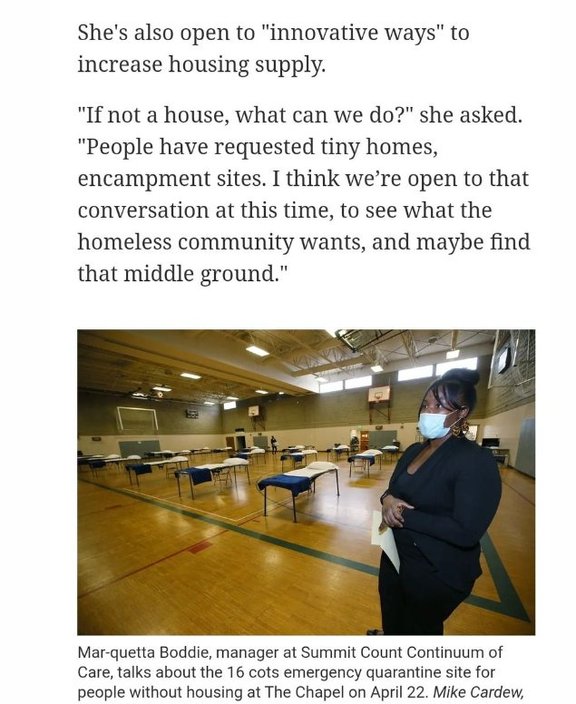

Timeline photos
Do you remember that 5 minutes where the manager of Summit County's Continuum of Care said we should look at ideas like tiny houses in Akron?
She immediately walked that back saying she didn't want to get involved in "politics."
COWARD RUN OUR INSTITUTIONS.